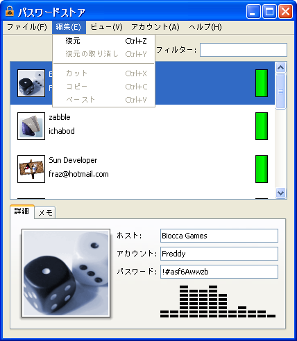
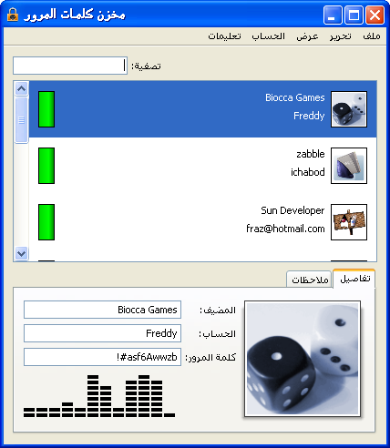

Internationalization is the process of designing an application so that the user can run it using his or her cultural preferences without modifying or recompiling the code. These cultural preferences, collectively known as locale, include (but aren't limited to): language, currency formatting, time and date formatting, and numeric formatting.An internationalized program is designed so that text elements, such as status messages and GUI component labels, are stored outside the source code in resource bundles and retrieved dynamically. Separating the locale-specific information from the code is what allows a program to run in different languages and with different preferences without having to recompile.
Localization is the process of translating the text to a particular language and adding any locale-specific components. When an application is localized to a language and you run the app in that locale, Swing grabs the localized strings from the resource bundle and the layout manager resizes the component accordingly.
For example, an English-speaking person writes an application following the rules of internationalization; later, that application is localized to Japanese and Spanish. When a user with the Language System Preference set to Japanese runs the application, Swing detects this. When the application appears, the menus, labels, buttons, and so on, show Japanese text, and the components are scaled accordingly. If that user then quits the program, sets the language system preference to Spanish, and re-launches the application, the application appears in Spanish, scaled according to the new character set.
Swing's layout managers understand how locale affects a UI — it is not necessary to create a new layout for each locale. For example, in a locale where text flows right to left, the layout manager will arrange components in the same orientation, if specified. Bidi text (mixed directional text, used by Hebrew and Arabic, for example) is supported as well.
Every program should be designed with internationalization in mind: GUI component labels, status messages, currency, date, phone, and address formats should not be hardcoded into programs. Once a program has been internationalized, a language expert can perform the actual translation at a later date without requiring any recompiling.
As the following screenshots show, PasswordStore has been localized to Japanese and Arabic.
 PasswordStore in Japanese
 PasswordStore in Arabic